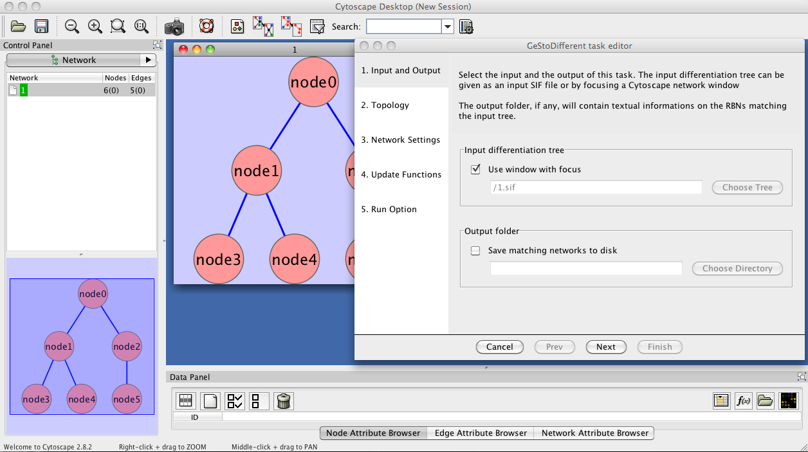
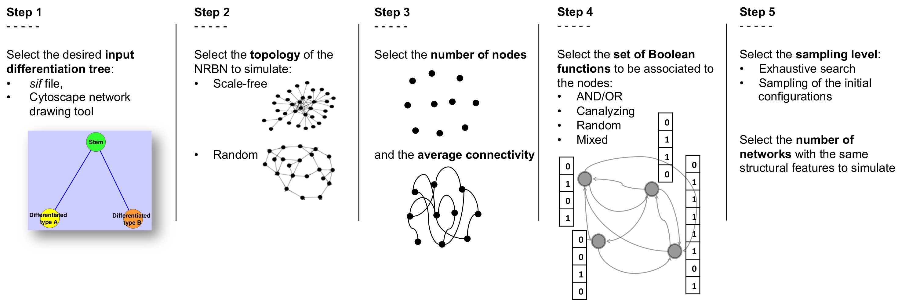

-

Example screenshot of GESTODifferent plugin.
Example workflow of GESTODifferent.
-

Example differentiation tree. The descendent of a unique stem cell type are two distinct differentiated cell types.
-

Schematic representation of the crypt differentiation tree. Stem cells are the root of the tree, while the 4 differentiated cell types (i.e. Paneth, Goblet, enteroendocrine, absorptive or enterocyte) are the leaves.